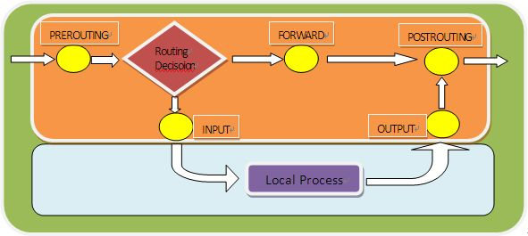
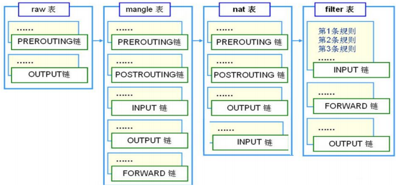

防火墙（Firewall），也称防护墙，是由Check Point创立者Gil Shwed于1993年发明并引入国际互联网。
它是一种工作在网络或主机边缘，对进出网络或主机的数据包基于一定的规则检查，并在匹配某规则时
由规则定义的行为进行处理的一组功能的组件，基本上的实现都是默认情况下关闭所有的通过型访问，
只开放允许访问的策略
一、防火墙介绍
防火墙的分类
按防火墙服务范围可分为：
主机防火墙：服务范围为当前主机
网络防火墙：服务范围为防火墙一侧的局域网
按软硬件可分为：
硬件防火墙：在专用硬件级别实现部分功能的防火墙；另一个部分功能基于软件
实现，Checkpoint, NetScreen
软件防火墙：运行于通用硬件平台之上的防火墙的应用软件
按OSI模型可分为：
网络层防火墙：OSI下面第三层
应用层防火墙/代理服务器：代理网关，OSI七层
Netfilter组件
Netfilter是Linux 2.4内核防火墙框架，该框架既简洁又灵活，可实现安全策略应用中的许多功能，
如数据包过滤、数据包处理、地址伪装、透明代理、动态网络地址转换（NAT），
以及基于用户及媒体访问控制（MAC）地址的过滤和基于状态的过滤、包速率限制等。
特性：
内核空间，集成在Linux内核中
扩展各种网络服务的结构化底层框架
内核中选取五个位置放了五个hook(勾子) function(INPUT、OUTPUT、FORWARD、
PREROUTING、POSTROUTING)，而这五个hook function向用户开放，用户可以通过一
个命令工具（iptables）向其写入规则
由信息过滤表（table）组成，包含控制IP包处理的规则集（rules），规则被分组放在链（chain）上
三种报文流向：
流入本机：PREROUTING –> INPUT–>用户空间进程
流出本机：用户空间进程 –>OUTPUT–> POSTROUTING
转发：PREROUTING –> FORWARD –> POSTROUTING

iptables由四个表和五个链以及一些规则组成
四个表table：filter、nat、mangle、raw
filter表：过滤规则表，根据预定义的规则过滤符合条件的数据包
nat表：network address translation 地址转换规则表
mangle：修改数据标记位规则表
raw：关闭NAT表上启用的连接跟踪机制，加快封包穿越防火墙速度
优先级由高到低的顺序为:raw–>mangle–>nat–>filter
五个内置链chain
INPUT
OUTPUT
FORWARD
PREROUTING
POSTROUTING

二、iptables工具
格式：iptables [-t table] SUBCOMMAND chain [-m matchname [per-matchoptions]] -j
targetname [per-target-options]
(1)table：
raw, mangle, nat, [filter]默认
(2)SUBCOMMAND：
链管理：
1
2
3
4
5
6
7-N new, 自定义一条新的规则链
-X delete，删除自定义的空的规则链
-P Policy，设置默认策略；对filter表中的链而言，
其默认策略有: ACCEPT：接受
DROP：丢弃
REJECT：拒绝
-E 重命名自定义链；引用计数不为0的自定义链不能够被重命名，也不能被删除查看：
1
2
3
4
5
6-L list, 列出指定鏈上的所有规则，本选项须置后
-n numberic，以数字格式显示地址和端口号
-v verbose，详细信息
-vv 更详细
-x exactly，显示计数器结果的精确值,而非单位转换后的易读值
–line-numbers 显示规则的序号常用组合：
1
2
3-vnL
–vvnxL –line-numbers
-S selected,以iptables-save 命令格式显示链上规则规则管理：
1
2
3
4
5
6
7
8
9
10
11-A：append，追加
-I：insert, 插入，要指明插入至的规则编号，默认为第一条
-D：delete，删除
(1) 指明规则序号
(2) 指明规则本身
-R：replace，替换指定链上的指定规则编号
-F：flush，清空指定的规则链
-Z：zero，置零
iptables的每条规则都有两个计数器
(1) 匹配到的报文的个数
(2) 匹配到的所有报文的大小之和
(3)扩展匹配条件
扩展匹配条件：需要加载扩展模块（/usr/lib64/xtables/*.so），方可生效
查看帮助 man iptables-extensions
扩展匹配分为隐性扩展和显性扩展两种
隐性扩展：不需要写模块名称
1 |
显性扩展：必须指定模块名称
1 | 如：iptables -A INPUT -p tcp -m multiport –dports 21,80,445 -j REJECT |
(4)处理动作：
1 | -j targetname [per-target-options] |
简单： ACCEPT，DROP
扩展： REJECT：–reject-with:icmp-port-unreachable默认
RETURN：返回调用链
REDIRECT：端口重定向
LOG：记录日志，dmesg
MARK：做防火墙标记
DNAT：目标地址转换
SNAT：源地址转换
MASQUERADE：地址伪装
…
自定义链：
三、iptables基本命令使用举例
(一)链及NAT的基本操作
清除所有的规则。
1）清除预设表filter中所有规则链中的规则。
1
iptables -F
2）清除预设表filter中使用者自定链中的规则。
1
2iptables -X
iptables -Z3)清楚NAT表规则
1
iptables -F -t nat
4)NAT表的显示
1
iptables -t nat -nL
设置链的默认策略。一般有两种方法。
1）首先允许所有的包，然后再禁止有危险的包通过放火墙。
1
2
3iptables -P INPUT ACCEPT
iptables -P OUTPUT ACCEPT
iptables -P FORWARD ACCEPT2）首先禁止所有的包，然后根据需要的服务允许特定的包通过防火墙。
1
2
3iptables -P INPUT DROP
iptables -P OUTPUT DROP
iptables -P FORWARD DROP列出表/链中的所有规则。默认只列出filter表。
1
iptables -L
向链中添加规则。下面的语句用于开放网络接口：
1
2
3
4
5
6iptables -A INPUT -i lo -j ACCEPT
iptables -A OUTPUT -o lo -j ACCEPT
iptables -A INPUT -i eth0 -j ACEPT
iptables -A OUTPUT -o eth1 -j ACCEPT
iptables -A FORWARD -i eth1 -j ACCEPT
iptables -A FORWARD -0 eth1 -j ACCEPT注意:由于本地进程不会经过FORWARD链，因此回环接口lo只在INPUT和OUTPUT两个链上作用。
使用者自定义链。
1
2
3iptables -N custom
iptables -A custom -s 0/0 -d 0/0 -p icmp -j DROP
iptables -A INPUT -s 0/0 -d 0/0 -j DROP
(二)设置基本的规则匹配
指定协议匹配。
1）匹配指定协议。
1
iptables -A INPUT -p tcp
2）匹配指定协议之外的所有协议。1
iptables -A INPUT -p !tcp
指定地址匹配。
1）指定匹配的主机。
1
iptables -A INPUT -s 192.168.0.18
2）指定匹配的网络。
1
iptables -A INPUT -s 192.168.2.0/24
3）匹配指定主机之外的地址。
1
iptables -A FORWARD -s !192.168.0.19
4）匹配指定网络之外的网络。
1 | iptables -A FORWARD -s ! 192.168.3.0/24 |
指定网络接口匹配。
1）指定单一的网络接口匹配。
1
2iptables -A INPUT -i eth0
iptables -A FORWARD -o eth02）指定同类型的网络接口匹配。
1
iptables -A FORWARD -o ppp+
指定端口匹配。
1）指定单一端口匹配。
1
2iptables -A INPUT -p tcp –sport www
iptables -A INPUT -p udp –dport 532）匹配指定端口之外的端口。3）匹配端口范围。1
iptables -A INPUT -p tcp –dport !22
1 | iptables -A INPUT -p tcp –sport 22:80 |
4）匹配ICMP端口和ICMP类型。
1 | iptables -A INOUT -p icmp –icimp-type 8 |
5）指定ip碎片。
每个网络接口都有一个MTU（最大传输单元），这个参数定义了可以通过的数据包的最大尺寸。
如果一个 数据包大于这个参数值时，系统会将其划分成更小的数据包称为ip碎片）来传输，
而接受方则对这些ip碎片再进行重组以还原整个包。
这样会导致一个问题：当系统将大数据包划分成ip碎片传输时，第一个碎片含有完整的包头信息
（IP+TCP、UDP和ICMP），但是后续的碎片只有包头的部分信息（如源地址、目的地址）。
因此，检查后面的ip碎片的头部（象有TCP、UDP和ICMP一样）是不可能的。假如有这样的一条
规则：
1 | iptables -A FORWARD -p tcp -s 192.168.1.0/24 -d 192.168.2.100 –dport 80 -j ACCEPT |
并且这时的FORWARD的policy为DROP时，系统只会让第一个ip碎片通过，而余下的碎片因为包头信息不
完整而无法通过。可以通过—fragment/-f 选项来指定第二个及以后的ip碎片解决上述问题。
#iptables -A FORWARD -f -s 192.168.1.0/24 -d 192.168.2.100 -j ACCEPT
注意现在有许多进行ip碎片的实例，如DoS，因此允许ip碎片通过是有安全隐患的，对于这一点可以
采用iptables的匹配扩展来进行限制。
(三)设置扩展的规则匹配（举例已忽略目标动作）
1、多端口匹配。
1）匹配多个源端口。
#iptables -A INPUT -p tcp -m multiport –sport 22,53,80,110
2）匹配多个目的端口。
#iptables -A INPUT -p tcp -m multiport –dpoort 22,53,80
3）匹配多端口(无论是源端口还是目的端口）
#iptables -A INPUT -p tcp -m multiport –port 22,53,80,110
2、指定TCP匹配扩展
使用 –tcp-flags 选项可以根据tcp包的标志位进行过滤。
#iptables -A INPUT -p tcp –tcp-flags SYN,FIN,ACK SYN
#iptables -A FROWARD -p tcp –tcp-flags ALL SYN,ACK
上实例中第一个表示SYN、ACK、FIN的标志都检查，但是只有SYN匹配。第二个表示ALL（SYN，
ACK，FIN，RST，URG，PSH）的标志都检查，但是只有设置了SYN和ACK的匹配。
#iptables -A FORWARD -p tcp –syn
选项—syn相当于”–tcp-flags SYN,RST,ACK SYN”的简写。
3、limit速率匹配扩展。
1）指定单位时间内允许通过的数据包个数，单位时间可以是/second、/minute、/hour、/day或使用第一个子母。
#iptables -A INPUT -m limit –limit 300/hour
2 )指定触发事件的阀值。
#iptables -A INPUT -m limit –limit-burst 10
用来比对一次同时涌入的封包是否超过10个，超过此上限的包将直接丢弃。
3）同时指定速率限制和触发阀值。
#iptables -A INPUT -p icmp -m limit –-limit 3/m –limit-burst 3
表示每分钟允许的最大包数量为限制速率（本例为3）加上当前的触发阀值burst数。任何情况下，都可保
证3个数据包通过，触发阀值burst相当于允许额外的包数量。
4、基于状态的匹配扩展（连接跟踪）
每个网络连接包括以下信息：源地址、目标地址、源端口、目的端口，称为套接字对（socket pairs）；协
议类型、连接状态（TCP协议）
和超时时间等。防火墙把这些信息称为状态（stateful）。状态包过滤防火墙能在内存中维护一个跟踪状态
的表，比简单包过滤防火墙具有更大的安全性，命令格式如下：
iptables -m state –-state [!]state [,state,state,state]
其中，state表是一个逗号分割的列表，用来指定连接状态，4种：
>NEW：该包想要开始一个新的连接（重新连接或连接重定向）
>RELATED：该包是属于某个已经建立的连接所建立的新连接。举例：
FTP的数据传输连接和控制连接之间就是RELATED关系。
>ESTABLISHED：该包属于某个已经建立的连接。
>INVALID：该包不匹配于任何连接，通常这些包被DROP。
>UNTRACKED：未进行追踪的连接，如raw表中关闭追踪
示例：
iptables -A INPUT -d 172.16.1.10 -p tcp -m multiport –dports 22,80 -m state —
state NEW,ESTABLISHED -j ACCEPT
iptables -A OUTPUT -s 172.16.1.10 -p tcp -m multiport –sports 22,80 -m state —
state ESTABLISHED -j ACCEPT
已经追踪到的并记录下来的连接信息库
/proc/net/nf_conntrack
调整连接追踪功能所能够容纳的最大连接数量
/proc/sys/net/nf_conntrack_max
不同的协议的连接追踪时长
/proc/sys/net/netfilter/
注意：CentOS7 需要加载模块： modprobe nf_conntrack
开放被动模式的ftp服务
- 装载ftp连接追踪的专用模块：
跟踪模块路径：/lib/modules/kernelversion/kernel/net/netfilter
1 | vim /etc/sysconfig/iptables-config |
- 放行请求报文：
命令连接：NEW, ESTABLISHED
数据连接：RELATED, ESTABLISHED
1 | iptables –I INPUT -d LocalIP -p tcp -m state –state ESTABLISHED,RELATED -j ACCEPT |
- 放行响应报文：
1 | iptables -I OUTPUT -s LocalIP -p tcp -m state –state ESTABLISHED -j ACCEPT |
开放被动模式的ftp服务示例：
1 | yum install vsftpd |
iptable防火墙优化原则
任何不允许的访问，应该在请求到达时给予拒绝
规则在链接上的次序即为其检查时的生效次序
基于上述，规则优化
1 安全放行所有入站和出站的状态为ESTABLISHED状态连接
2 谨慎放行入站的新请求
3 有特殊目的限制访问功能，要在放行规则之前加以拒绝
4 同类规则（访问同一应用），匹配范围小的放在前面，用于特殊处理
5 不同类的规则（访问不同应用），匹配范围大的放在前面
6 应该将那些可由一条规则能够描述的多个规则合并为一条
7 设置默认策略，建议白名单（只放行特定连接）
1） iptables -P，不建议
2） 建议在规则的最后定义规则做为默认策略
##
四、NAT地址转换
NAT：network address translation
PREROUTING，INPUT，OUTPUT，POSTROUTING
请求报文：修改源/目标IP，由定义如何修改
响应报文：修改源/目标IP，根据跟踪机制自动实现
SNAT：source NAT POSTROUTING, INPUT
让本地网络中的主机通过某一特定地址访问外部网络，实现地址伪装
请求报文：修改源IP
典型应用场景：多个PC机使用ADSL路由器共享上网，每个PC机都配置了内网IP，PC机访问
外部网络的时候，路由器将数据包的报头中的源地址替换成路由器的ip，当外部网络的服
务器比如网站web服务器接到访问请求的时候，他的日志记录下来的是路由器的ip地址，而
不是pc机的内网ip；这是因为，这个服务器收到的数据包的报头里边的“源地址”，已经
被替换了所以叫做SNAT，基于源地址的地址转换。
DNAT：destination NAT PREROUTING , OUTPUT
把本地网络中的主机上的某服务开放给外部网络访问(发布服务和端口映射)，
但隐藏真实IP
请求报文：修改目标IP
典型应用场景：比如有web服务器放在内网配置内网ip，前端有个防火墙配置公网ip，互联
网上的访问者使用公网ip来访问这个网站当访问的时候，客户端发出一个数据包，这个数据
包的报头里边，目标地址写的是防火墙的公网ip，防火墙会把这个数据包的报头改写一次，
将目标地址改写成web服务器的内网ip，然后再把这个数据包发送到内网的web服务器上，这
样，数据包就穿透了防火墙，并从公网ip变成了一个对内网地址的访问了，即DNAT，基于目
标的网络地址转换。
PNAT：port nat，端口和IP都进行修改
SNAT：固定IP
–to-source [ipaddr[-ipaddr]][:port[-port]]
–random
iptables -t nat -A POSTROUTING -s LocalNET ! -d LocalNet -j SNAT –tosource ExtIP
示例：
iptables -t nat -A POSTROUTING -s 10.0.1.0/24 ! –d 10.0.1.0/24 -j SNAT —
to-source 172.18.1.6-172.18.1.9
SNAT：动态IP
MASQUERADE：地址伪装
如此配置的话，不用指定SNAT的目标ip了，不管现在网卡的出口获得了怎样的动态ip，
MASQUERADE会自动读取网卡现在的ip地址然后做SNAT出去，这样就实现了很好的动态
SNAT地址转换。
–to-ports port[-port]
–random
iptables -t nat -A POSTROUTING -s LocalNET ! -d LocalNet -j MASQUERADE
示例：
iptables -t nat -A POSTROUTING -s 10.0.1.0/24 ! –d 10.0.1.0/24 -j
MASQUERADE
如何区分SNAT和DNAT
从定义来讲它们一个是源地址转换，一个是目标地址转换。都是地址转换的功能，将私有地
址转换为公网地址。
要区分这两个功能可以简单的由连接发起者是谁来区分：
内部地址要访问公网上的服务时（如web访问），内部地址会主动发起连接，由路由器或者
防火墙上的网关对内部地址做个地址转换，将内部地址的私有IP转换为公网的公有IP，网
关的这个地址转换称为SNAT，主要用于内部共享IP访问外部。
当内部需要提供对外服务时（如对外发布web网站），外部地址发起主动连接，由路由器或
者防火墙上的网关接收这个连接，然后将连接转换到内部，此过程是由带有公网IP的网关替
代内部服务来接收外部的连接，然后在内部做地址转换，此转换称为DNAT，主要用于内部服
务对外发布。